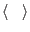

This module contains the definitions of the most important
mean flow variables used in geophysical models. In GOTM, these
are
- the mean horizontal velocity components,
 and
and 
- the mean potential temperature,
 , (or the mean buoyancy,
, (or the mean buoyancy,  )
)
- the mean salinity,

Note that in general a variable describing a turbulent
field can be decomposed into a mean and a fluctuating part. In GOTM,
we use the notation
where
 denotes the ensemble mean and the prime
the fluctuating part. In addition, for brevity, we use the following conventions:
Note that, if not explicitly mentioned, GOTM uses the units kg, m, s,
K. Further conventions are introduced in the turbulence chapter
section 4. All operations on these meanflow variables
are executed and coordinated in the meanflow module.
Subsections
Karsten Bolding
2012-01-24